Java中的锁 #
1 公平锁和非公平锁 #
1.1 基本概念 #
1.1.1 公平锁 #
1.1.1.1 含义 #
公平锁是指多个线程按照申请锁的顺序去获得锁，线程会直接进入队列去排队，永远都是队列里面的第一位才能得到锁。
1.1.1.2 优缺点 #
1.1.1.2.1 优点 #
- 所有的线程都能得到资源，不会饿死在队列中。
1.1.1.2.2 缺点 #
- 吞吐量会下降很多，队列里面除了第一个线程，其他的线程都会阻塞，
CPU唤醒阻塞线程的开销会很大。
1.1.2 非公平锁 #
1.1.2.1 含义 #
- 非公平锁是指多个线程区获取锁的时候，会直接去尝试，获取不到，再去进入等待队列，如果能获取到，则直接获取锁。
ReentrantLock默认是非公平锁， 如果要使用公平锁，可以使用ReentrantLock lock = new ReentrantLock(true);
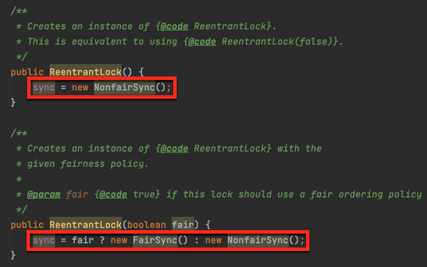
1.1.2.2 优缺点 #
1.1.2.2.1 优点 #
- 可以减少
CPU唤醒线程的开销，整体的吞吐效率会高点，CPU也不必去唤醒所有线程，会减少唤醒线程的数量。
1.1.2.2.2 缺点 #
- 可能导致队列中的线程一直获取不到锁或者长时间获取不到锁导致饿死。
1.2 具体实例 #
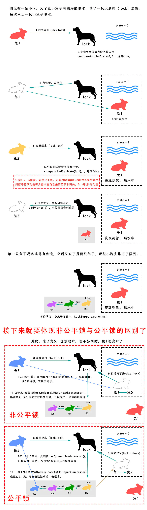
1.3 源码分析 #
下面以 ReentrantLock 为例。
ReentrantLock有一个内部类Sync，他继承自AbstractQueuedSynchronizer。Sync又有两个子类FairSync和NoFairSync，分别对应公平锁和非公平锁。

- 公平锁和非公平锁中获取锁的具体实现如下：

分析以上代码，可知：
- 公平锁就是在获取锁之前会先判断等待队列是否为空或者自己是否位于队列头部，该条件通过才能继续获取锁。
- 若释放锁的时候没有新的线程来获取锁，则非公平锁等于公平锁。
- 若释放锁的时候正好有一个线程来获取锁，而此时位于队列头部的线程还没有被唤醒（因为线程上下文切换是需要不少开销的），此时后来的线程则优先获得锁，成功打破公平，称为非公平锁。
- 对于非公平锁，只要线程进入了等待队列，队列里面依然是
FIFO的原则，跟公平锁的顺序是一样的，因为公平锁和非公平锁的release()部分是共用AQS的代码。
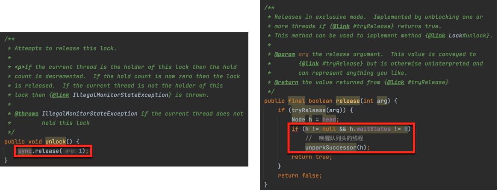
2 可重入锁与非可重入锁 #
2.1 基本概念 #
2.1.1 可重入锁 #
2.1.1.1 含义 #
- 可重入锁又名递归锁，是指在同一个线程在外层方法获取锁的时候，再进入该线程的内层方法会自动获取锁（前提锁对象得是同一个对象或者
class），不会因为之前已经获取过还没释放而阻塞。 Java中ReentrantLock和Synchronized都是可重入锁。
2.1.1.2 实例 #
public class Widget {
public synchronized void doSomething() {
System.out.println("方法 1 执行...");
doOthers();
}
public synchronized void doOthers() {
System.out.println("方法 2 执行...");
}
}
- 在上面的代码中，类中的两个方法都是被内置锁
synchronized修饰的，doSomething()方法中调用doOthers()方法。 - 因为内置锁是可重入的，所以同一个线程在调用
doOthers()时可以直接获得当前对象的锁，进入doOthers()进行操作。 - 如果是一个不可重入锁，那么当前线程在调用
doOthers()之前需要将执行doSomething()时获取当前对象的锁释放掉，实际上该对象锁已被当前线程所持有，且无法释放，所以此时会出现死锁。
2.1.1.3 优缺点 #
2.1.1.3.1 优点 #
- 可以在一定程度上避免死锁。
2.1.2 非可重入锁 #
2.1.2.1 含义 #
- 非可重入锁是指如果当前线程执行某个方法已经获取了该锁，那么在方法中尝试再次获取该锁时，就会因为获取不到而被阻塞。
2.1.2.2 实例 #
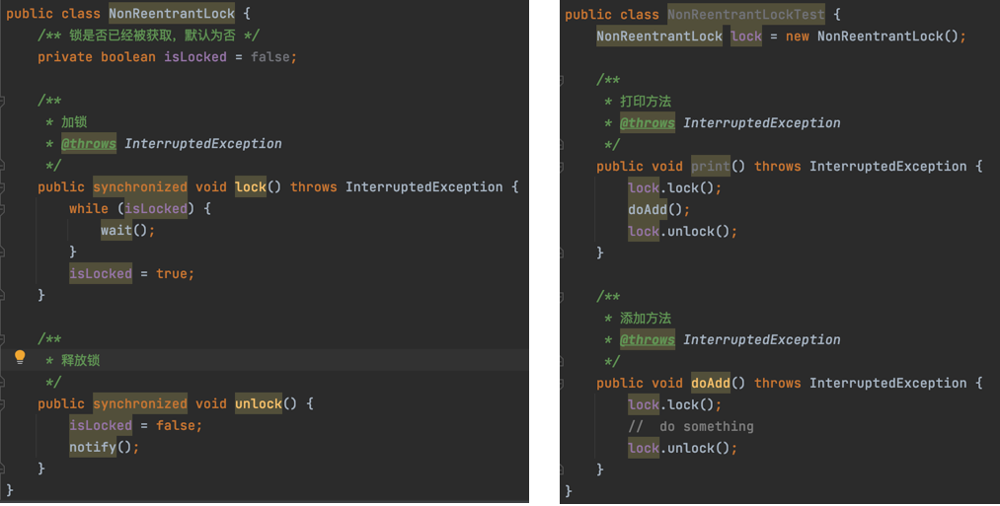
当线程执行 print() 方法时首先获取 lock，接下来执行 doAdd() 方法时就无法执行 doAdd() 中的逻辑，必须先释放锁。
2.2 实例分析 #
2.2.1 可重入锁 #
- 当有很多人在排队打水，此时管理员允许锁和同一个人的多个水桶绑定。
- 这个人用多个水桶打水时，第一个水桶和锁绑定并打完水之后，第二个水桶也可以直接和锁绑定并开始打水，所有的水桶打完水之后，打水人才会将锁还给管理员。
- 这个人的所有打水流程都能够成功执行，后续等待的人也能够打到水，这就是可重入锁。

2.2.2 非可重入锁 #
- 如果是非可重入锁的话，此时管理员只允许锁和同一个人的一个水桶绑定。
- 第一个水桶和锁绑定打完水之后并不会释放锁，导致第二个水桶不能和锁绑定，也无法打水。
- 因此当前线程就会出现死锁，整个等待队列中的所有线程都无法被唤醒。

2.3 源码分析 #
-
首先
ReentrantLock和NonReentrantLock都继承父类AQS，其父类AQS中维护了一个同步状态status来计数重入次数，status初始值为 0。 -
获取锁时：
- 可重入锁先尝试获取并更新
status值：- 如果
status == 0，表示没有其他线程在执行同步代码，则把status置为 1，当前线程开始执行。 - 如果
status != 0，则判断当前线程是否是获取到这个锁的线程，如果是的话，执行status + 1，且当前线程可以再次获取锁。
- 如果
- 非可重入锁直接去获取并尝试更新当前
status的值：- 如果
status != 0，则会导致其获取锁失败，当前线程阻塞。
- 如果
- 可重入锁先尝试获取并更新
-
释放锁时：
- 可重入锁同样先获取当前
status的值，在当前线程是持有锁的前提下，如果status - 1 == 0，则表示当前线程所有重复获取锁的操作都已经执行完毕，然后该线程才会真正释放锁。 - 非可重入锁则是在确定当前线程是持有锁的线程之后，直接将
status置为 0，将锁释放。
- 可重入锁同样先获取当前

3 乐观锁与悲观锁 #
3.1 基本概念 #
- 乐观锁与悲观锁是一种广义上的概念，体现了看待线程同步的不同角度。
- 对于同一个数据的并发操作：
- 悲观锁认为自己在使用数据的时候一定有别的线程来修改数据，因此在获取数据的时候会先加锁，确保数据不会被别的线程修改，
Java中synchronized和lock的实现类都是悲观锁。 - 乐观锁认为自己在使用数据时不会有别的线程修改数据，所以不会添加锁，只是在更新数据的时候去判断之前有没有别的线程更新了这个数据：
- 如果这个数据没有被更新，当前线程将自己修改的数据成功写入。
- 如果数据已经被其他线程更新，则根据不同的实现方式执行不同的操作（例如报错或者自动重试）。
- 乐观锁在
Java中是通过使用无锁编程来实现，最常采用的是CAS算法，Java原子类中的递增操作就是通过CAS自旋实现的。
- 悲观锁认为自己在使用数据的时候一定有别的线程来修改数据，因此在获取数据的时候会先加锁，确保数据不会被别的线程修改，
- 乐观锁和悲观锁的使用场景如下：
- 悲观锁适合写操作多的场景，先加锁可以保证写操作时数据正确。
- 乐观锁适合读操作多的场景，不加锁的特点能够使其读操作的性能大幅提升。
3.2 实例分析 #
乐观锁和悲观锁获取同步资源数据的过程如下：

3.3 源码分析 #
乐观锁和悲观锁的调用方式示例如下：
// ------------------------- 悲观锁的调用方式 -------------------------
// synchronized
public synchronized void testMethod() {
// 操作同步资源
}
// ReentrantLock
private ReentrantLock lock = new ReentrantLock(); // 需要保证多个线程使用的是同一个锁
public void modifyPublicResources() {
lock.lock();
// 操作同步资源
lock.unlock();
}
// ------------------------- 乐观锁的调用方式 -------------------------
private AtomicInteger atomicInteger = new AtomicInteger(); // 需要保证多个线程使用的是同一个 AtomicInteger
atomicInteger.incrementAndGet(); //执行自增 1
通过调用方式示例，我们可以发现悲观锁基本都是在显式的锁定之后再操作同步资源，而乐观锁则直接去操作同步资源，而乐观锁之所以能够做到不锁定同步资源也可以正确的实现线程同步，主要是因为乐观锁主要采用 CAS 来实现，具体可参见
2.14 CAS 原理。
4 独占锁与共享锁 #
4.1 基本概念 #
4.1.1 独占锁 #
- 独占锁也叫排他锁，是指该锁一次只能被一个线程所持有。
- 如果线程
T对数据A加上排他锁后，则其他线程不能再对A加任何类型的锁。 - 获得独占锁的线程即能读数据，又能修改数据。
JDK中的synchronized和JUC中的Lock的实现类就是独占锁。
4.1.2 共享锁 #
- 共享锁是指该锁可被多个线程所持有。
- 如果线程
T对数据A加上共享锁后，则其他线程只能对A再加共享锁，不能加排他锁。 - 获得共享锁的线程只能读数据，不能修改数据。
4.2 源码分析 #
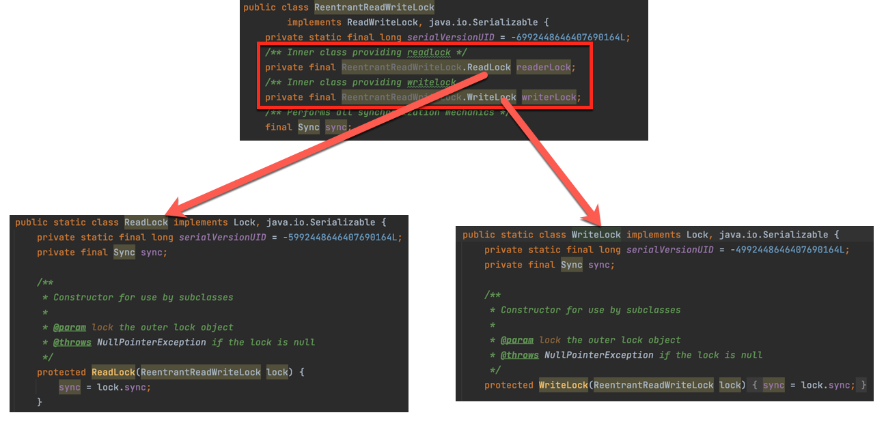
-
ReentrantReadWriteLock有两把锁，分别是ReadLock和WriteLock。 -
ReadLock和WriteLock的主体都是Sync，它是AQS的一个子类，但读锁和写锁的加锁方式不一样：读锁是共享锁，写锁是独占锁。 -
读写、写读、写写的过程互斥，因为读锁和写锁是分离的，所以
ReentrantReadWriteLock的并发性比一般的互斥锁有了很大提升。 -
AQS中有一个state字段（int类型，32 位），该字段用来描述有多少线程持有锁：- 在独占锁中，这个值通常是 0 或者 1（如果是重入锁的话
state就是重入的次数）。 - 在共享锁中，
state就是持有锁的数量。 - 但是在
ReentrantReadWriteLock中有读、写两把锁，所以需要在一个整形变量state上分别描述读锁和写锁的状态，于是将state变量按位切割分成了两个部分，高 16 位表示读锁状态，低 16 位表示写锁状态。 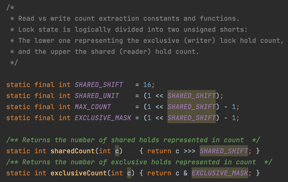
- 在独占锁中，这个值通常是 0 或者 1（如果是重入锁的话
-
获取写锁的源码及过程如下图：
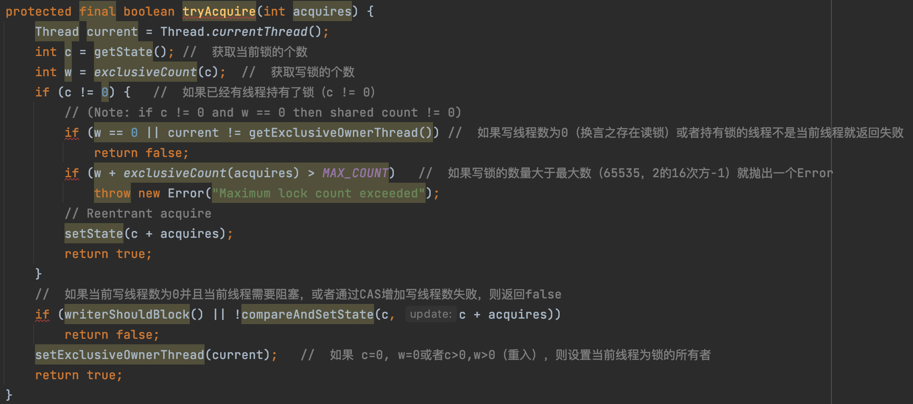

tryAcquire()除了重入条件（当前线程为获取了写锁的线程）之外，增加了一个读锁是否存在的判断，如果存在读锁，则写锁不能获取，原因在于必须确保写锁的操作对读锁可见，如果允许读锁在已被获取的情况下对写锁的获取，那么正在运行的其他线程就无法感知到当前写线程的操作。- 因此，只有等其他读线程都释放了读锁，写锁才能被当前线程获取，而写锁一旦被获取，则其他读写线程的后续访问均被阻塞。
- 写锁的释放与
ReentrantLock的释放过程基本类似，每次释放均减少写状态，当写状态为 0 时，表示写锁已被释放，然后等待的读写线程才能够继续访问读写锁，同时前次写线程的修改对后续的读写线程可见。
-
获取读锁的源码如下图所示：
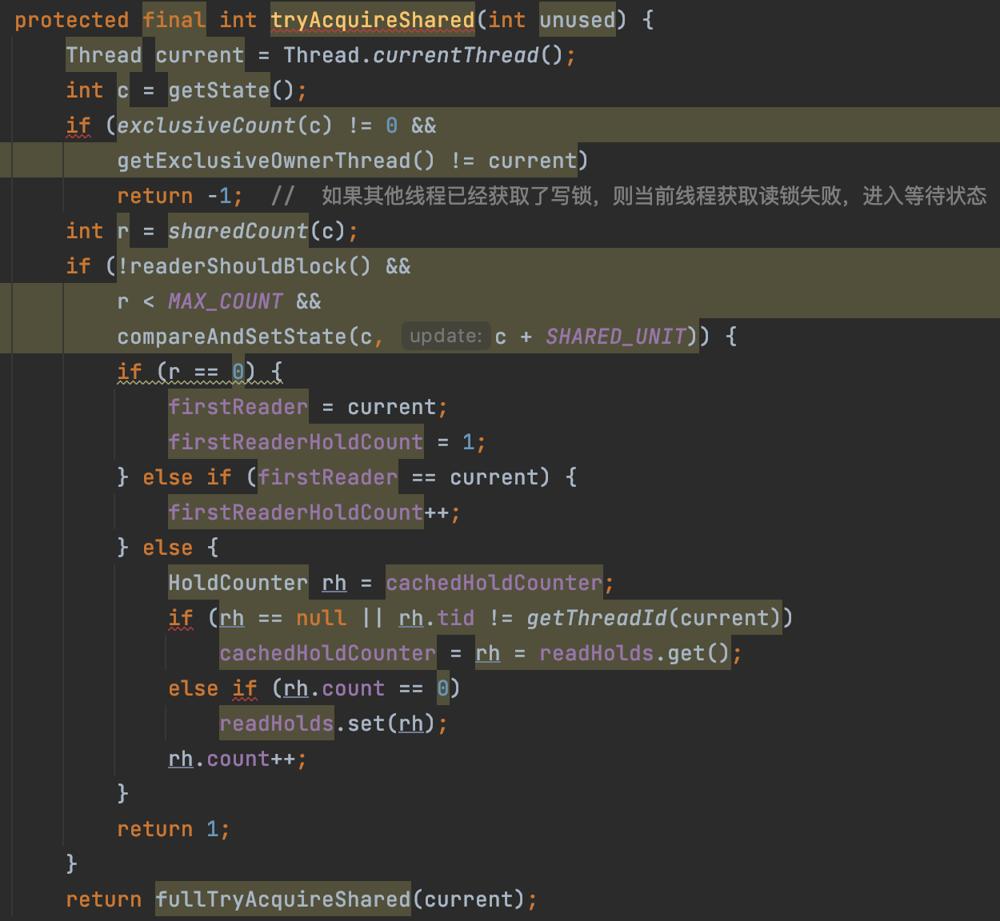
- 在
tryAcquireShared方法中，如果其他线程已经获取了写锁，则当前线程获取读锁失败，进入等待状态。 - 如果当前线程获取了写锁或者写锁未被获取，则当前线程增加读状态，成功获取读锁。
- 所以读写锁才能实现读读的过程共享，而读写、写读、写写的过程互斥。
- 在
5 自旋锁与适应性自旋锁 #
5.1 基本概念 #
5.1.1 自旋锁 #
5.1.1.1 含义 #
- 阻塞或唤醒一个
Java线程需要操作系统切换CPU状态来完成，这种状态转换需要耗费处理器时间，如果同步代码块中的内容过于简单，状态转换消耗的时间可能比用户代码执行的时间还要长。 - 在许多场景中，同步资源的锁定时间很短，为了这一小段时间去切换线程，线程挂起和恢复现场的花费可能会让系统得不偿失，如果物理机器有多个处理器，能够让两个或两个以上的线程同时并行执行，我们就可以让后面那个请求锁的线程不放弃
CPU的执行时间，看看持有锁的线程是否很快就会释放锁。 - 而为了让当前线程“稍等一下”，我们就需要让当前线程进行自旋，如果在自旋完成后前面锁定同步资源的线程已经释放了锁，那么当前线程就可以不必阻塞而是直接获取同步资源，从而避免切换线程的开销，这就是自旋锁。

5.1.1.2 优缺点 #
5.1.1.2.1 缺点 #
- 自旋锁本身是由缺点的，它本身不能代替阻塞。
- 自旋等待虽然避免了线程切换的开销，但他要占用处理器时间。
- 如果锁被占用的时间很短，自旋等待的效果就会非常好，反之，如果锁被占用的时间很长，那么自旋的线程只会白浪费处理器资源。
- 所以，自旋等待的时间必须要有一定的限度，如果自旋超过了限定次数（默认是 10 次，可以使用
-XX:PreBlockSpin来更改）没有成功获得锁，就应当挂起线程。
5.1.2 适应性自旋锁 #
5.1.2.1 含义 #
- 自适应意味着自旋的时间不再固定，而是由前一次在同一个锁上的自旋时间及锁的拥有者的状态来决定。
- 如果在同一个锁对象上，自旋等待刚刚成功获得过锁，并且持有锁的线程正在运行中，那么虚拟机就会认为这次自旋也有可能再次成功，进而他将允许自旋等待持续相对更长的时间。
- 如果对于某个锁，自旋很少成功获得过，那在以后尝试获取这个锁时，将可能省略掉自旋过程，直接阻塞线程，避免浪费处理器资源。
5.2 源码分析 #
- 自旋锁的实现原理同样也是
CAS，AtomicInteger中调用Unsafe进行自增操作中的do-while就是一个自旋操作，如果修改数值失败，则通过循环来执行自旋，直至修改成功。
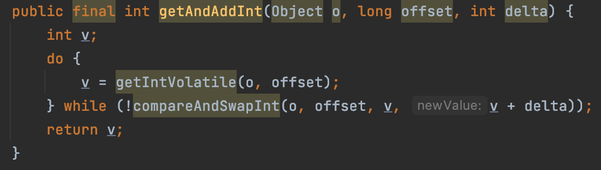
6 无锁、偏向锁、轻量级锁、重量级锁 #
6.1 前言 #
- 这四种锁是指锁的状态，专门针对 Synchronized的。
- 目前锁一共有四种状态，级别从低到高依次是无锁、偏向锁、轻量级锁、重量级锁，锁状态只能升级，不能降级。
- 四种锁对应 Mark Word的内容如下：
| 锁状态 | 存储内容 | 标志位 |
|---|---|---|
| 无锁 | 对象的 hashCode、对象分代年龄、是否是偏向锁（0） | 01 |
| 偏向锁 | 偏向线程 ID、偏向时间戳、对象分代年龄、是否是偏向锁（1） | 01 |
| 轻量级锁 | 指向栈中锁记录的指针 | 00 |
| 重量级锁 | 指向互斥量（重量级锁）的指针 | 10 |
6.2 分类 #
6.2.1 无锁 #
- 无锁没有对资源进行锁定，所有的线程都能访问并修改同一个资源，但同时只有一个线程能修改成功。
- 无锁的特点就是修改操作在循环内进行，线程会不断的尝试修改共享资源：
- 如果没有冲突就修改成功并退出，否则就会继续循环尝试。
- 如果有多个线程修改同一个值，必定会有一个线程能修改成功，而其他修改失败的线程会不断尝试直到修改成功。
- 无锁无法全面替代有锁，但无锁在某些场合下的性能是非常高的。
- CAS原理及应用即是无锁的体现。
6.2.2 偏向锁 #
6.2.2.1 为什么要引入偏向锁 #
- 因为 HotSpot 作者经过研究实践发现，在大多数情况下，锁不仅不存在多线程竞争，而且总是由同一线程多次获得。
- 为了让线程获得锁的代价更低，引进了偏向锁，主要目的是在没有多线程竞争的情况下尽量减少不必要的轻量级锁执行路径，因为轻量级锁的加锁解锁操作是需要依赖多次 CAS 原子指令的，而偏向锁只需要在置换线程 ID 的时候依赖一次 CAS 原子指令。
6.2.2.2 含义 #
- 偏向锁是指一段同步代码一直被一个线程所访问，那么该线程会自动获取锁，降低获取锁的代价。
- 偏向锁是在单线程执行代码块时使用的机制，如果在多线程并发的环境下（即线程 A 尚未执行完同步代码块，线程 B 发起了申请锁的申请），则一定会转化为轻量级锁或者重量级锁。
6.2.2.3 原理 #
6.2.2.3.1 获得偏向锁 #
当一个线程访问同步块并获取锁时，会在 对象头和栈帧中的锁记录里存储锁偏向的线程 ID，以后进入和退出同步块时不需要花费 CAS 操作来争夺锁资源，只需要检查是否为偏向锁、锁标识以及线程 ID 即可，处理流程如下：
- 检查 Mark Word 是否为偏向锁、锁标识位是否为 01：
- 如果为可偏向状态，则检查线程 ID 是否为当前线程 ID：
- 如果是，则执行同步代码块。
- 如果不是，则通过 CAS 操作竞争锁：
- 如果竞争成功，则将 Mark Word 的线程 ID 替换为当前线程 ID。
- 如果竞争失败，说明当前存在多线程竞争的情况，当到达全局安全点（在这个时间点上没有正在执行的代码），获得偏向锁的线程被挂起，偏向锁升级为轻量级锁，然后被锁在安全点的线程继续往下执行同步代码块。
- 如果为可偏向状态，则检查线程 ID 是否为当前线程 ID：
6.2.2.3.2 撤销偏向锁 #
偏向锁的释放采用了一种只有竞争才会释放锁的机制，线程是不会主动去释放偏向锁，需要等待其他线程来竞争，同时，偏向锁的撤销需要等待全局安全点，处理流程如下：
- 暂停拥有偏向锁的线程。
- 判断锁对象是否还处于被锁定状态：
-
如果是，则挂起持有锁的线程，并将指向当前线程的锁记录地址的指针放入对象头 Mark Word，升级为轻量级锁状态（00），然后恢复持有锁的当前线程，进入轻量级锁的竞争模式。
-
如果不是，则恢复到无锁状态（01），以允许其余线程竞争。
需要注意的是，此处将当前线程挂起再恢复的过程中并没有发生锁的转移，仍然在当前线程手中，只是穿插了个将对象头中的线程 ID 变更为指向锁记录地址的指针。
-
- 偏向锁的获得和撤销流程如下图所示： 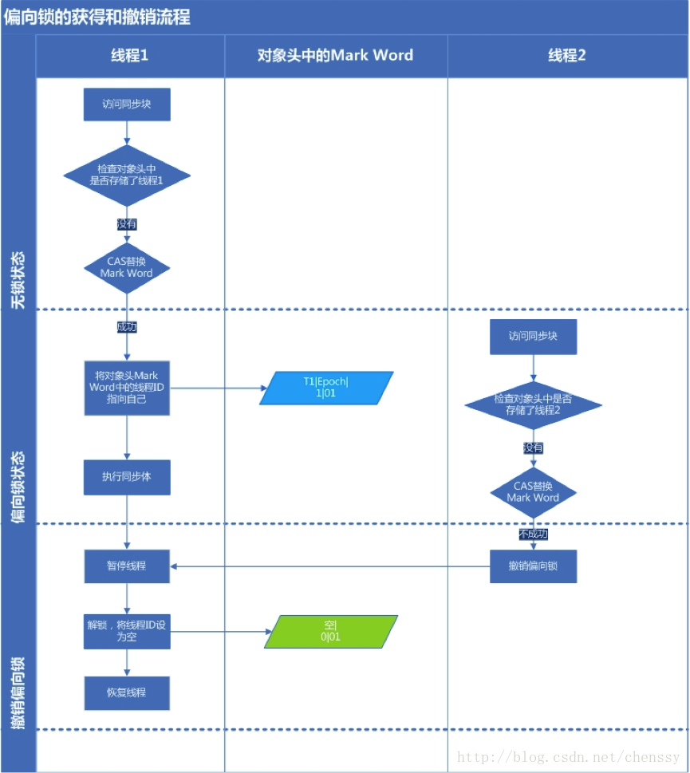
6.2.3 轻量级锁 #
6.2.3.1 含义 #
- 轻量级锁的主要目的是在没有多线程竞争的前提下，减少传统的重量级锁使用操作系统互斥量产生的性能消耗。
- 轻量级锁适用的场景是线程交替执行同步块的情况，如果存在同一时间访问同一锁的情况，必然会导致轻量级锁膨胀为重量级锁。
6.2.3.2 原理 #
6.2.3.2.1 获得轻量级锁 #
当关闭偏向锁功能或者多个线程竞争偏向锁导致偏向锁升级为轻量级锁，则会尝试获取轻量级锁，其步骤如下：
- 在线程进入同步块时，如果同步对象锁状态为无锁状态（锁标志位为 01，是否为偏向锁为 0），虚拟机首先在当前线程的栈帧中建立一个名为 Lock Record的空间，用于存储锁对象目前的 Mark Word的拷贝，此时线程堆栈与对象头的状态如下图所示： 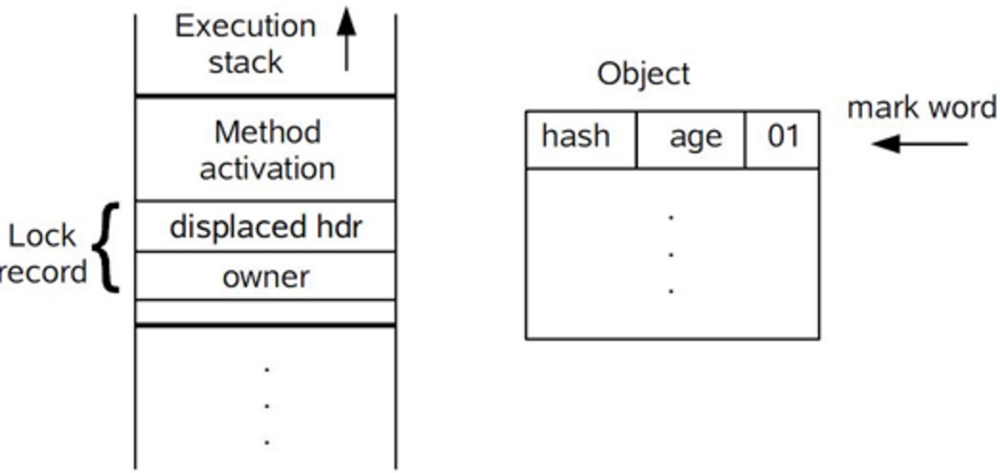
- 拷贝对象头中的 Mark Word 到 Lock Record 中。
- 拷贝成功后，虚拟机将使用 CAS 操作尝试将对象 Mark Word 中的 Lock Word 更新为指向当前线程 Lock Record 的指针，并将 Lock Record 里的
Owner指针指向object mark word，如果更新成功，则执行步骤 4，否则，执行步骤 5。 - 如果这个动作更新成功了，那么当前线程就拥有了该对象的锁，并且对象 Mark Word 的锁标志位设置为 00，即表示此对象处于轻量级锁定状态，此时线程堆栈与对象头的状态如下图所示： 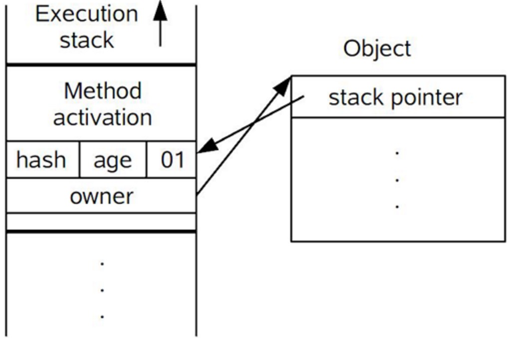
- 如果这个操作更新失败了，虚拟机首先会检查对象 Mark Word 中的 Lock Word 是否指向当前线程的堆栈：
- 如果是，说明当前线程已经拥有了这个对象的锁，那就可以直接进入同步块继续执行。
- 否则，说明多个线程竞争锁，进入自旋执行 3，若自旋结束时仍未获得锁，轻量级锁就要膨胀为重量级锁，锁标志的状态值变为 10，Mark Word 中存储的就是指向重量级锁的指针，当前线程以及后面等待锁的线程也要进入阻塞状态。
6.2.3.2.2 释放轻量级锁 #
轻量级锁的释放也是通过 CAS 操作来进行的，主要步骤如下：
-
通过 CAS 操作尝试把线程中复制的 Mark Word 对象替换为当前的 Mark Word：
- 如果替换成功，整个同步过程就完成了，恢复到无锁状态（01）。
- 如果替换失败，说明有其他线程尝试过获取该锁，那就要在释放锁的同时，唤醒被挂起的线程。
-
轻量级锁的获得及释放过程如下图所示：

6.2.3.3 相关问题 #
6.2.3.3.1 为什么升级为轻量级锁时要把对象头里的 Mark Word 复制到线程栈的 Lock Record 中呢 #
- 因为在申请对象锁时需要以该值作为 CAS 的比较条件，同时，在升级到重量级锁的时候，能通过这个比较判定是否在持有锁的过程中此锁被其他线程申请过，如果被其他线程申请了，则在释放锁的时候要唤醒被挂起的线程。
6.2.3.3.2 为什么会尝试 CAS 不成功，以及什么情况下会不成功 #
- CAS 本身是不带锁机制的，而是通过比较而来，假设如下场景：
- 线程 A 和线程 B 都在对象头里的锁标识为无锁状态下进入，那么如果线程 A 先更新对象头为其锁记录指针成功之后，线程 B 再用 CAS 去更新，就会发现此时的对象头已经不是其操作前的对象 HashCode 了，所以CAS 会失败，也就是说，只有两个线程并发申请锁的时候会发生 CAS 失败。
- 然后线程 B 进行 CAS 自旋，等待对象头的锁标识重新变回无锁状态，或对象头的内容等于对象 HashCode（因为这是线程 B 做 CAS 操作前的值），这也就意味着线程 A 执行结束（轻量级锁中只有线程 A 执行完毕撤销锁了才会重置对象头），此时线程 B 的 CAS 终于成功了，于是线程 B 获得了锁以及执行同步代码的权限。
- 如果线程 A 的执行时间较长，线程 B 经过若干次 CAS 时钟没有成功，则锁膨胀为重量级锁，即线程 B 被挂起阻塞，等待重新调度。
6.2.4 重量级锁 #
6.2.4.1 含义 #
- 重量级锁是指依赖于操作系统 Mutex Lock 实现的锁。
- 操作系统实现线程之间的切换需要从用户态转换到核心态，这个成本非常高，状态之间的转换需要相对比较长的时间，因此重量级锁一般效率比较低。
6.3 转换 #


6.4 选择 #
- 各种锁并不是相互替代的，而是在不同场景下的不同选择：
- 所以，使用哪种技术，一定要看其所处的环境及场景，在绝大多数的情况下，偏向锁是有效的，这是基于HotSpot作者发现的大多数锁只会由同一线程并发申请的经验规律。
- 不同锁的优缺点及适用场景如下：
| 锁 | 优点 | 缺点 | 适用场景 |
|---|---|---|---|
| 偏向锁 | 加锁和解锁不需要额外的消耗，和执行非同步方法仅存在纳米级的差距。 | 如果线程间存在锁竞争，会带来额外的锁撤销的消耗。 | 适用于只有一个线程访问同步块的场景。 |
| 轻量级锁 | 竞争的线程不会阻塞，提高了程序的响应速度。 | 如果始终得不到锁竞争的线程使用自旋会消耗CPU。 | 追求响应时间，同步块执行速度非常快。 |
| 重量级锁 | 线程竞争不使用自旋，不会消耗CPU。 | 线程阻塞，响应时间缓慢。 | 追求吞吐量，同步块执行速度较慢。 |